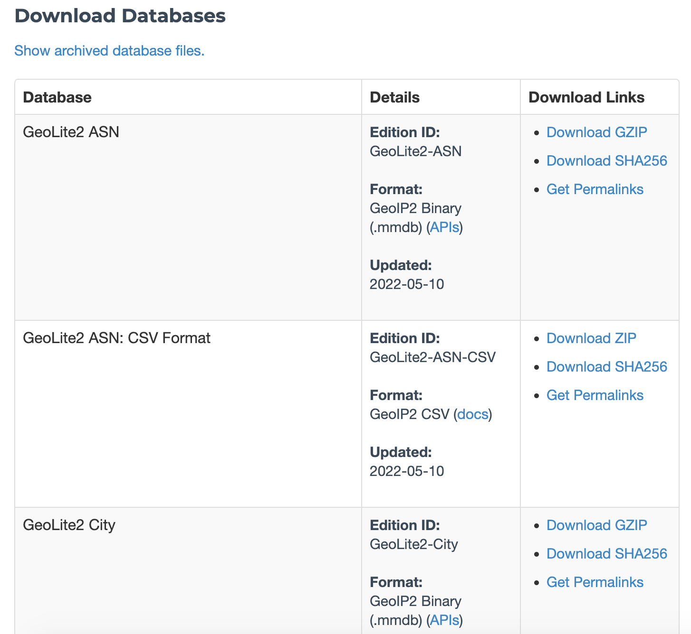
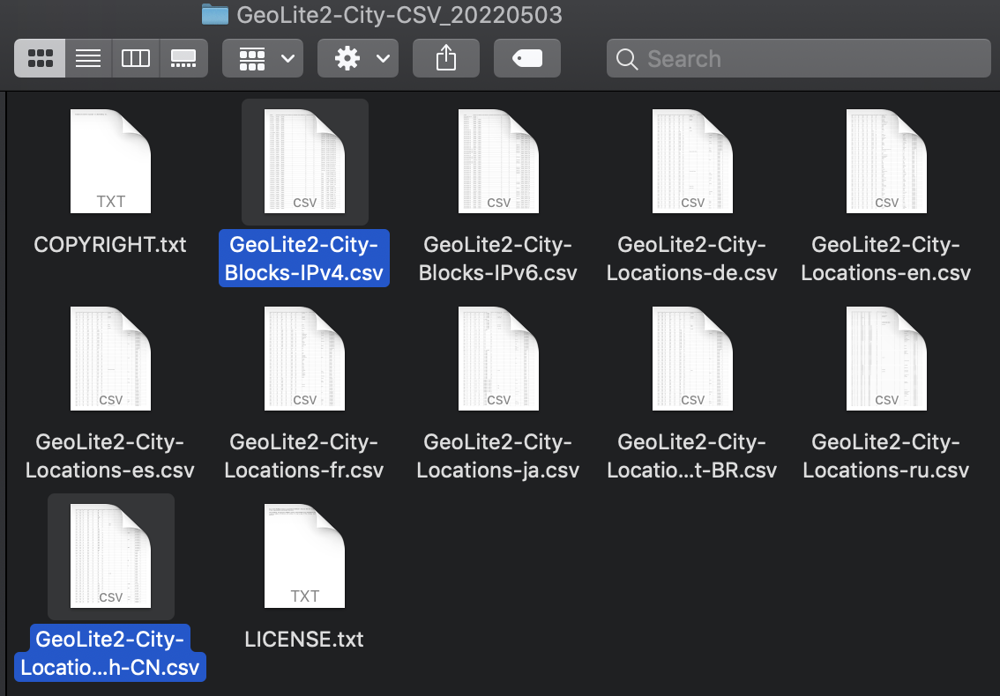

注册: https://www.maxmind.com/en/geolite2/signup
链接: https://dev.maxmind.com/geoip/geolite2-free-geolocation-data?lang=en
GeoLite2数据库是免费的IP地理定位数据库 可与MaxMind的GeoIP2数据库相媲美 但不如MaxMind的GeoIP2数据库准确
GeoLite2的国家城市和ASN数据每周二将在网站更新下载包
链接: https://www.maxmind.com/en/accounts/716735/geoip/downloads
GeoLite2提供了多种数据格式 该程序仅解析CSV格式
通常下载City和ASN数据
City为精确到城市的IP定位数据
ASN为自治系统信息(IP归属机构)
以City的CSV数据为例 解压下载的压缩包可看到许多文件 语言文件 IPV4段 IPV6段 LICENSE 等
此工具可解析GeoLite2 City: CSV Format 和 GeoLite2 ASN: CSV Format
工具为控制台程序通过控制台运行即可 一共两个版本 DotNet core 5.0 DotNet Framework 4.0
DotNet core 5.0为跨平台版本 但需要DotNet5环境 安装教程见微软官网: https://dotnet.microsoft.com/
DotNet Framework 4.0为Windows版本需要.Net Framework 4.0环境 通常Win10系统已经自带
在 DotNet core 环境下运行
dotnet GeoLite2Helper.dll
在 Windows 环境下运行
GeoLite2Helper.exe
输出
GeoLite2Helper (search|create|server) ...
------------------------------------------------------------------------
search : search info from ip
search [IP] [DBFile]+
e.g: search 8.8.8.8 db.loc
e.g: search 8.8.8.8 db.asn
e.g: search 8.8.8.8 db.loc db.asn
e.g: search 8.8.8.8 db.asn db.loc
create : create database file
create (loc|asn) ...
e.g: create asn GeoLite2-ASN-Blocks-IPv4.csv db.asn
e.g: create loc City-Locations-zh-CN.csv City-Blocks-IPv4.csv db.loc
server : run as server
server (http|udp) [port] [local] [DBFile]+
http : run as http server
http://localip:port?ip=8.8.8.8
udp : run as udp server
recv:[ip] back:[result_json]
local: (1/0) if local just bind 127.0.0.1, otherwrise 0.0.0.0
e.g: server http 8080 1 db.loc
e.g: server udp 12345 0 db.loc
e.g: server udp 12345 0 db.asn
e.g: server http 8080 1 db.loc db.asn
e.g: server http 8080 1 db.asn db.loc
------------------------------------------------------------------------
Powered by DebugST -> http://github.com/DebugST
工具提供了3种运行模式 分别为search create server
*.loc和*.asn为工具自定义数据库文件 *.loc为IP定位数据 *.asn为IP自治系统数据 由工具通过CSV文件自行创建
create 提供根据CSV文件生成工具自定义的数据库文件 CSV文件为刚才介绍中提到文件
命令格式
GeoLite2Helper create (loc|asn) ...
loc表示创建IP定位数据库 则需要City下载包里面的语言文件和IPV4文件
GeoLite2Helper create loc [loc_file] [ipv4_file] [out_file] eg: GeoLite2Helper create loc GeoLite2-City-Locations-zh-CN.csv GeoLite2-City-Blocks-IPv4.csv db.loc
运行后将会生成db.loc文件
asn表示创建自治系统数据库 则需要ASN下载包里面的IPV4文件
GeoLite2Helper create asn [ipv4_file] [out_file] eg: GeoLite2Helper create asn GeoLite2-ASN-Blocks-IPv4.csv db.asn
运行后将会生成db.asn文件
search 为单次检索命令
命令格式
GeoLite2Helper search [IP] [DBFile]+ eg: GeoLite2Helper search 223.5.5.5 db.loc GeoLite2Helper search 223.5.5.5 db.asn GeoLite2Helper search 223.5.5.5 db.loc db.asn GeoLite2Helper search 223.5.5.5 db.asn db.loc
可以选择使用其中一个或者两个数据库文件同时使用
示例:
$ GeoLite2Helper search 223.5.5.5 db.asn db.loc
----------------------------------------------------------
{
"asn": {
"number": 37963,
"name": "Hangzhou Alibaba Advertising Co.,Ltd."
},
"location": {
"geoname": {
"locale_code": "zh-CN",
"continent_code": "AS",
"continent_name": "亚洲",
"country_iso_code": "CN",
"country_name": "中国",
"subdivision_1_iso_code": "ZJ",
"subdivision_1_name": "浙江省",
"subdivision_2_iso_code": "",
"subdivision_2_name": "",
"city_name": "杭州",
"metro_code": "",
"time_zone": "Asia/Shanghai",
"is_in_european_union": "0"
},
"registered_country_geoname": {
"locale_code": "zh-CN",
"continent_code": "AS",
"continent_name": "亚洲",
"country_iso_code": "CN",
"country_name": "中国",
"subdivision_1_iso_code": "",
"subdivision_1_name": "",
"subdivision_2_iso_code": "",
"subdivision_2_name": "",
"city_name": "",
"metro_code": "",
"time_zone": "Asia/Shanghai",
"is_in_european_union": "0"
},
"represented_country_geoname": "",
"is_anonymous_proxy": "0",
"is_satellite_provider": "0",
"postal_code": "",
"latitude": "30.2994",
"longitude": "120.1612",
"accuracy_radius": "1000"
}
}
//注 真实结果并未对JSON格式化
server 为以服务模式允许 支持两种服务模式 http udp
http 以GET方式发送数据 参数为ip
udp 以UDP方式监听端口 接受IP纯文本 返回此IP查询结果的JSON数据
命令格式
GeoLite2Helper server (http|udp) [port] [local] [DBFile]+ port -> 监听端口 local -> 是否仅监听回环地址 (1 or 0) DBFile -> 数据库文件 如 -> db.loc eg: GeoLite2Helper server http 8080 0 db.loc //以http方式启动服务 对局域网生效 GeoLite2Helper server udp 12345 1 db.asn //以udp方式启动服务 仅本机生效 GeoLite2Helper server http 8080 0 db.loc db.asn //以http方式启动服务 对局域网生效 GeoLite2Helper server http 8080 0 db.asn db.loc //以http方式启动服务 对局域网生效
在http模式下 启动局域网生效需要Administrator.
$ GeoLite2Helper server http 8080 1 db.asn db.loc ----------------------------------------------------- $ curl http://localhost:8080/?ip=8.8.8.8 ----------------------------------------------------- { ... //JSON数据 ... } //注 真实结果并未对JSON格式化
$ GeoLite2Helper server udp 12345 0 db.loc db.asn
-----------------------------------------------------
$ nc -u localhost 12345
8.8.8.8
-----------------------------------------------------
{
...
//JSON数据
...
}
//注 真实结果并未对JSON格式化
Powered by DebugST -> http://github.com/DebugST